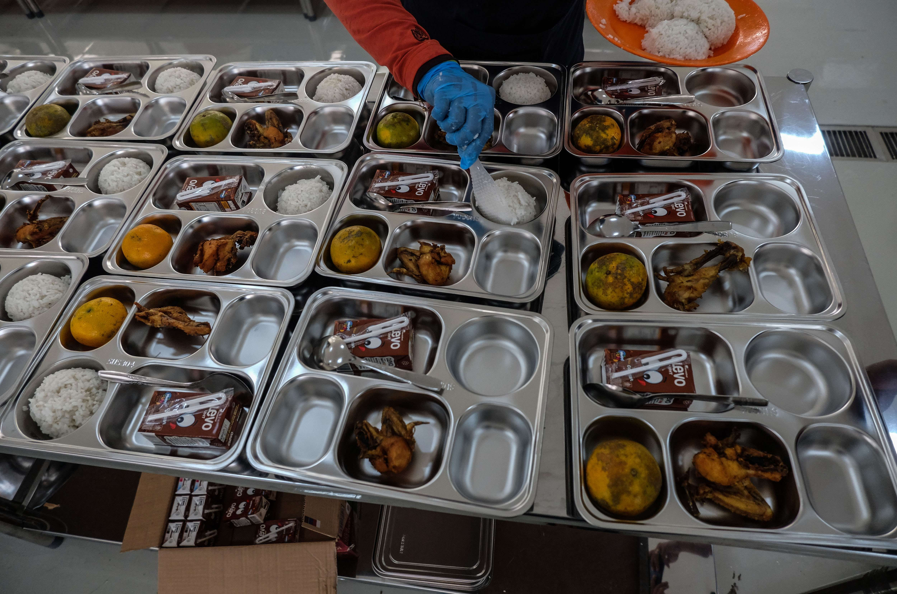

Keracunan Pada Program Makan Bergizi Gratis Prabowo
Keracunan Pada Program MBG Unggulan Presiden Prabowo, 200 orang hanyalah angka?
Jelajah Surabaya - SURABAYA Salah satu program Presiden Prabowo yang telah menjadi fokus perbincaangan publik, Program Makan Bergizi Gratis (MBG) yang diluncurkan pada 6 Januari 2025 telah menjangkau 3,4 juta penerima di 1.286 titik hingga saat ini. dDi mana program ini diitargetkan jumlah itu melonjak menjadi 82,9 juta jiwa pada akhir November 2025.
Akan tetapi, sejak program MBG diluncurkan pada 6 Januari 2025, setidaknya ada empat kasus keracunan makanan yang dilaporkan terjadi di empat daerah berbeda. Hingga saat ini angka keracunan MBG tembus 200 orang dari 3 juta penerima MBG. Hal itu disampaikan langsung Presiden Prabowo.
"Hari ini memang ada yang keracunan, yang keracunan sampai hari ini dari 3 koma sekian juta, kalau tidak salah di bawah 200 orang (yang keracunan), yang rawat inap hanya 5 orang." — ujar Prabowo dalam Sidang Kabinet Paripurna di Istana Kepresidenan, Jakarta, Senin (5/5/2025)
Rangkaian Laporan Keracunan MBG :
- Pertama, 40 siswa di Sekolah Dasar Negeri (SDN) Dukuh 03, Kabupaten Sukoharjo, Jawa Tengah, keracunan seusai menyantap Makan Bergizi Gratis, Kamis (16/1/2025).
- Kedua, kasus keracunan yang menimpa delapan siswa SD di Kabupaten Empat Lawang, Sumatera Selatan, Selasa (18/2/2025).
- Ketiga, sedikitnya 60 pelajar dari sejumlah sekolah di Kabupaten Batang, Jateng, keracunan seusai menyantap paket MBG pada Senin (14/4/2025). Para siswa itu mengeluhkan pusing, mual, muntah, dan diare.
- Keempat, peristiwa terbaru adalah keracunan yang menimpa 78 siswa Madrasah Aliyah Negeri (MAN) 1 Cianjur dan SMP PGRI 1 Cianjur di Jawa Barat. Mereka mengalami gejala keracunan setelah mengonsumsi paket MBG pada Senin (21/4/2025). Sebagian besar siswa saat ini masih menjalani perawatan di dua rumah sakit setempat.
342 siswa SMP Negeri 35 Kota Bandung mengalami gejala keracunan makanan setelah menyantap makan gratis yang merupakan program Presiden Prabowo Subianto itu pada Selasa, 29 April 2025.
Sebanyak 172 siswa dari 14 sekolah di Kecamatan Talang Ubi, Kabupaten PALI, mengalami keracunan makanan usai mengikuti program Makan Bergizi Gratis (MBG).Para siswa dilaporkan mengalami gejala keracunan setelah menyantap makanan dari program MBG yang disalurkan pada Senin (5/5/2025).
Penyebab Keracunan:
Dalam sidang rapat paripurna, Presiden Prabowo menyebetukan beberapa kemugkinan penyebab keracunan pada program MBG :
- Kurangnya menjaga kebersihan anak sebelum makan, seperti tidak mencuci tangan sebelum makan.
- Tidak memakai sendok saat makan.
- Tidak terbiasa dengan makanan-makanan tertentu, seperti tidak terbiasa mengonsumsi susu atau lactose intolerant.